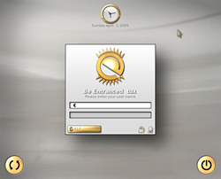
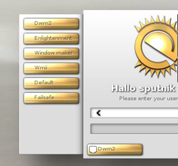

Entrance
Archivierte Anleitung
Dieser Artikel wurde archiviert, da er - oder Teile daraus - nur noch unter einer älteren Ubuntu-Version nutzbar ist. Diese Anleitung wird vom Wiki-Team weder auf Richtigkeit überprüft noch anderweitig gepflegt. Zusätzlich wurde der Artikel für weitere Änderungen gesperrt.
Artikel für fortgeschrittene Anwender
Dieser Artikel erfordert mehr Erfahrung im Umgang mit Linux und ist daher nur für fortgeschrittene Benutzer gedacht.
Zum Verständnis dieses Artikels sind folgende Seiten hilfreich:

Entrance ist ein Displaymanager, der von den Entwicklern des Enlightenment-Fenstermanagers (siehe E17) erstellt wurde. Mit diesem kann man bereits bei der Anmeldung auswählen, welcher Fenstermanager genutzt werden sollen. Dadurch ist er nicht an E17 gebunden, sondern kann beispielsweise auch GNOME oder KDE starten. Des Weiteren bietet Entrance mithilfe der von Enlightenment entwickelten "Engine" "edje" ein hohes Maß an Konfigurierbarkeit, welches derzeit aber noch nicht über eine grafische Anwendung möglich ist.
Hinweis:
Entrance befindet sich noch in Entwicklung, das heißt, dass es nicht immer funktionieren muss bzw. sogar Schaden am System verursachen kann. Wenn Entrance mal nicht mehr funktioniert, kann man jedoch über die Konsole den alten Login-Manager wiederherstellen (siehe Fehlerbehebung).
Installation¶
Das Programm befindet es nicht in den offiziellen Paketquellen, kann aber aus einem PPAs installiert werden [2].
Adresszeile zum Hinzufügen des PPAs:
ppa:efl/trunk
Hinweis!
Zusätzliche Fremdquellen können das System gefährden.
Ein PPA unterstützt nicht zwangsläufig alle Ubuntu-Versionen. Weitere Informationen sind der  PPA-Beschreibung des Eigentümers/Teams efl zu entnehmen.
PPA-Beschreibung des Eigentümers/Teams efl zu entnehmen.
Damit Pakete aus dem PPA genutzt werden können, müssen die Paketquellen neu eingelesen werden.
Im Anschluss muss das Paket
entrance
 mit apturl
mit apturl
Paketliste zum Kopieren:
sudo apt-get install entrance
sudo aptitude install entrance
installiert werden.
Bei der Installation über das Terminal wird man am Ende gefragt, welchen Login-Manager man standardmäßig benutzen möchte. Hier wählt man "Entrance" aus. Wenn diese Frage nicht gestellt wird oder falsch beantwortet wurde, kann man sie mit
sudo dpkg-reconfigure entrance
Nach einem Neustart ist Entrance dann aktiv.
Sitzung auswählen¶
 Der Login-Manager verwaltet nicht nur die Nutzer, er ermöglicht auch den Start von verschiedenen Sitzungen (wie etwa GNOME, WMII oder Xfce). Um nun zwischen diesen zu wählen, klickt man auf den goldenen Knopf im Anmeldefenster unter der Passworteingabe (siehe Bild ganz oben). Danach schiebt sich, wie auf dem Bild rechts zu erkennen, ein kleines Menü mit den verschiedenen Sitzungen nach außen. Mit der ausgewählten kann man sich dann einloggen.
Leider muss man mit jedem Login auswählen, welche Sitzung man verwenden möchte. Dies dürfte aber im Laufe der Entwicklung behoben werden.
Konfiguration¶
Da Entrance sich noch in der Entwicklung befindet, wird die Konfiguration hauptsächlich über die Konsole erfolgen. Dazu gibt es den Befehl entrance_edit. Beim Ausführen ohne Parametern sieht man eine Liste von Einstellungen, wo links der Name der Einstellung steht und rechts der Wert. Um eine Einstellung zu ändern, führt man den Befehl
sudo entrance_edit --name=wert
aus.
Die Tabelle ist nur ein Auszug der Konfigurationsmöglichkeiten und kann sich im Laufe der Entwicklung auch noch ändern. Des Weiteren kann es sein, dass einige Einstellungen in einem Thema nicht benötigt werden, so ist "time-format" in dem Standard-Thema nicht vorhanden.
| Konfigurationsoptionen | |
| Name | Beschreibung |
| theme | Pfad zum Thema (Design), im edj-Format. |
| greeting-before | Text, der vor dem Computernamen steht (Im Beispielbild:"Be Entranced") |
| greeting-after | Text,der nach dem Computernamen steht (Im Beispiel nicht vorhanden) |
| date-format | Datumsformat in der Form wie bei PHP. Hier kann selbstverständlich auch die Uhrzeit mit vorkommen |
| time-format | wie oben, nur auf die Zeit bezogen |
| presel-mode | Wenn der Modus aktiviert ist (1), dann steht der Name des zuletzt erfolgreich eingelogten Benutzers drin |
Sitzungen im Entrance-Menü¶
Die Fenstermanager werden wie bei GDM oder KDM im Ordner /usr/share/xsessions/ als .desktop-Dateien gespeichert. Das hat den Vorteil, dass fast jeder Fenstermanager bereits auswählbar ist, da die meisten Fenstermanager für GDM oder KDM angepasst wurden.
Falls der gewünschte Fenstermanager noch nicht vorhanden ist oder die Anzeige angepasst werden soll, gibt es hier noch eine kurze Erklärung zu den .desktop-Dateien.
Die Dateien müssen mit einem Editor [3] mit Root-Rechten [2] geöffnet werden.
[Desktop Entry] Encoding=UTF-8 Name=Fluxbox Session <- der Name der Sitzung Comment=Unsere Sitzung <- ein Kommentar Exec=startfluxbox <- das auszuführende Programm Icon= Type=Application
Installation von Themes¶
Hinweis:
Da sich Entrance wie E17 derzeit noch in der Entwicklung befindet, kann es passieren, dass Entrance nach einer Theme-Installation (selbst welche von einer offiziellen Seite) nicht mehr funktioniert.
Themes sind alle in dem Format name.edj gespeichert und sind u.a. auf dieser  Seite zu finden. Die Themes können dann in einen beliebigen Ordner gespeichert werden. Bei der Installation über die deb-Pakete werden verschiedene Themes auch im Ordner /usr/share/entrance/themes gespeichert. Da Entrance derzeit noch keine GUI für die Konfiguration mitbringt, wird das Theme über die Konsole eingerichtet:
Seite zu finden. Die Themes können dann in einen beliebigen Ordner gespeichert werden. Bei der Installation über die deb-Pakete werden verschiedene Themes auch im Ordner /usr/share/entrance/themes gespeichert. Da Entrance derzeit noch keine GUI für die Konfiguration mitbringt, wird das Theme über die Konsole eingerichtet:
sudo entrance_edit --theme /pfad/zum/thema.edj
Um gleich zu testen, ob es geklappt hat, kann man Entrance im laufendem Betrieb mit
sudo entrance -T
starten. Wenn nichts passiert, kann man das Standard-Design mit
sudo entrance_edit --theme=default.edj
wiederherstellen.
Hinweis:
Wenn Entrance im laufenden Betrieb gestartet wird, wird der Mauszeiger zu einem großen X. Unter Enlightenment lässt sich das beheben, wenn man das Mauszeigertheme nochmal laden lässt. Ansonsten wird dieser Fehler auch bei einem Neustart behoben.
Fehlerbehebung¶
Falls Entrance Probleme macht, ist es erstmal wichtig, an eine Konsole zu kommen. Wenn Entrance bereits beim Starten nicht funktioniert, geht dies über eine Textkonsole, z.B. Strg + Alt + F1 . Hier muss man sich noch einmal anmelden. Es werden nun zwei Wege beschrieben, um wieder einen Login-Manager zu bekommen. Am Ende beider Wege ist ein Neustart angebracht.
Anderen Login-Manager auswählen¶
Falls man Entrance erst kompliziert konfiguriert hat oder einfach abwarten möchte, bis ein Update den Fehler behebt, kann man mit
sudo dpkg-reconfigure entrance
einen anderen Login-Manager auswählen.
Konfiguration zurücksetzen¶
Da Entrance in der Standardkonfiguration meistens funktioniert, kann es sein, dass man beim Konfigurieren zu weit in den experimentellen Bereich vorgedrungen ist. Wenn man nun keine speziellen Konfigurationen hat, auf die man auf keinen Fall verzichten möchte, kann man das Paket komplett mit allen Konfigurationsdateien löschen und wieder neu installieren. Per apt-get:
sudo apt-get --purge remove entrance
Per aptitude:
sudo aptitude purge entrance
...Anschließend wird der gleiche Weg wie bei der Installation gegangen.
Spracheinstellungen¶
Wenn Entrance in E17 als Displaymananger eingesetzt werden soll, sind viele der GNOME-Programme trotz deutscher Spracheinstellung auf Englisch. Wer das nicht möchte, sollte GDM oder KDM nutzen.
Tastatur funktioniert nicht¶
Außerdem kann es vorkommen, dass die Tastatur nach dem Start nicht funktioniert. In diesem Fall muss man dafür sorgen, dass das entrance-init Skript als letztes ausgeführt wird. Dafür startet man den Rechner im Recovery Mode neu und benennt im Verzeichnis /etc/rc2.d den Symlink S99entrance so um, dass er in der alphabetischen Ordnung (in dieser werden die Skripte nämlich ausgeführt) am Ende steht, also z.B. in S99xentrance.
- Erstellt mit Inyoka
-
 2004 – 2017 ubuntuusers.de • Einige Rechte vorbehalten
2004 – 2017 ubuntuusers.de • Einige Rechte vorbehalten
Lizenz • Kontakt • Datenschutz • Impressum • Serverstatus -
Serverhousing gespendet von